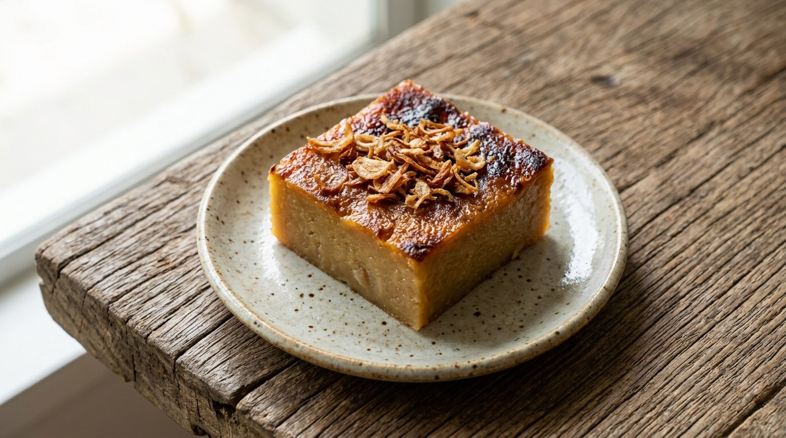

Phetchaburi's baked coconut custard — mung bean or taro, perfumed with fried shallots, crowned with a caramelised golden face.

ขนมหม้อแกง is Phetchaburi's royal dessert — the coconut custard that Thailand baked before ovens existed. Kapook's introduction to the recipe is the craving everyone recognises: nobody's going to Phetchaburi today, so we make it ourselves. The dish's signature is visible in every photo of it: the หน้าไหม้, the burnt-gold face on top, caramelised from the fried shallots scattered over the surface before baking.
The shallots do double duty, and the sources agree on both halves. First, the shallots are fried in oil until golden — then given five seconds on high heat, Wongnai's detail, so they don't come out greasy. Second, the frying oil itself goes into the batter: two tablespoons of shallot oil stirred through the custard, so the fried-onion perfume runs through every bite, not just the top.
Pim's recipe page records how it was made before the oven: a sheet of thick zinc laid over the charcoal brazier — the bottom heat — the custard tray centred on it, a second zinc sheet over the tray, and live coals piled on top — the top heat. The modern oven just does the same job at 170°C. The recipe itself is the same everywhere: eggs and pandan squeezed, palm sugar kneaded in, coconut cream and the filling, the shallot oil, the bake. Only the filling changes.
| Thai | English | Amount |
|---|---|---|
| ถั่วเขียวนึ่งบด | Steamed mung bean, ground | 200 g |
| ไข่เป็ด / ไข่ไก่ | Duck or chicken eggs | 5 |
| น้ำตาลมะพร้าว | Coconut sugar | 250 g |
| หัวกะทิ | Coconut cream | 400 g |
| ใบเตยแก่ | Pandan leaves | 4 |
| หอมแดงซอยขวาง | Shallots, sliced across | 50 g |
| น้ำมันพืช | Vegetable oil | 80 ml (keep 2 tbsp of the frying oil) |
The taro version (Kapook, Pim): swap the mung bean for 300 g steamed taro, mashed into the mixture — same eggs, cream, sugar, pandan and shallot oil, baked at 170°C about 20 minutes in cups.
Mung bean or taro. The Phetchaburi original is mung bean (Wongnai); the taro version (Kapook, Pim) is the richer, starchier variation. Both fillings exist because the custard is the point and the filling is its body.
Flour or none. Kapook's taro recipe is proudly flourless — the mashed taro and eggs hold the custard. Some shop recipes add rice flour to stabilise a big tray; the home recipes don't.
Oven or charcoal. The modern recipes bake at 170–180°C; Pim documents the original method — two zinc sheets and a charcoal brazier, bottom heat and top heat. The oven just replaces the charcoal; the top-burnt face is the constant.
How much shallot oil. Wongnai keeps two tablespoons of the frying oil for the batter; Kapook's version uses one. The oil carries the fried-onion perfume — more of it, more perfume.
Duck or chicken eggs. Both listed interchangeably in Wongnai's ingredients — duck eggs give the denser, richer set, chicken eggs the lighter one.
This recipe is translated from the following Thai-language sources. Where they disagree, we've said so.
1. Wongnai — "วิธีทำ ขนมหม้อแกงถั่ว" (the mung-bean recipe used here) — wongnai.com
2. Kapook — "ขนมหม้อแกงเผือก สูตรไร้แป้งอบร้อน ๆ" (the taro version) — cooking.kapook.com
3. Pim's Kitchen (พิม) — "ขนมหม้อแกงเผือก" (the history: charcoal brazier and zinc sheets) — pim.in.th